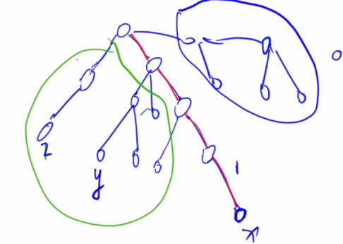

最近公共祖先
向上标记法 $o(n)$
一个点往上走并标记，另一个点往上走第一次遇到的点
倍增法
预处理 $o(nlogn)$
$f(i, j)$ 表示从 $i$ 开始，向上走 $2^j$ 步所能走到的节点（可能为空），其中 $0 \le j \le \lfloor logn \rfloor$
$j = 0$， $f(i, j) = i$的父节点
$j > 0$， $f(i, j) = f(f(i, j - 1)), j - 1)$
$depth[i]$ 表示深度
哨兵：如果从 $i$ 开始跳 $2^j$ 步会跳过根节点，那么 $f(i, j) = 0, depth[i] = 0$ （本题没有为0的点）
查询 $o(logn)$
先将两个点跳到同一层
设两点 $x$，$y$，判断 $depth[f(x, i)]$ 与 $depth[y]$ 的关系（两个点的深度差看成二进制，二进制拼凑的思想）
两个点同时往上跳，一直跳到它们的最近公共祖先的下一层为止（相同的话只能说是公共祖先，但不一定是最近，只有不等于才好判断）
从大到小枚举 $2^k$，如果两点不相同则可以往上跳，直到 $2^0$ 为止
模板题：
1 |
Tarjan - 离线求LCA $o(n + m)$
本质上是对向上标记法的优化 （ DFS 遍历框架）
所有点可分为：
- 已经遍历过，且回溯过的点
- 正在搜索的分支
- 还未搜索过的点

已经搜索过的点（绿色部分）可以合并到它们的祖先（红色部分），此时最近公共祖先就是代表元素（红）
回溯完之后再合并
本博客所有文章除特别声明外，均采用 CC BY-NC-SA 4.0 许可协议。转载请注明来自 0x3f！